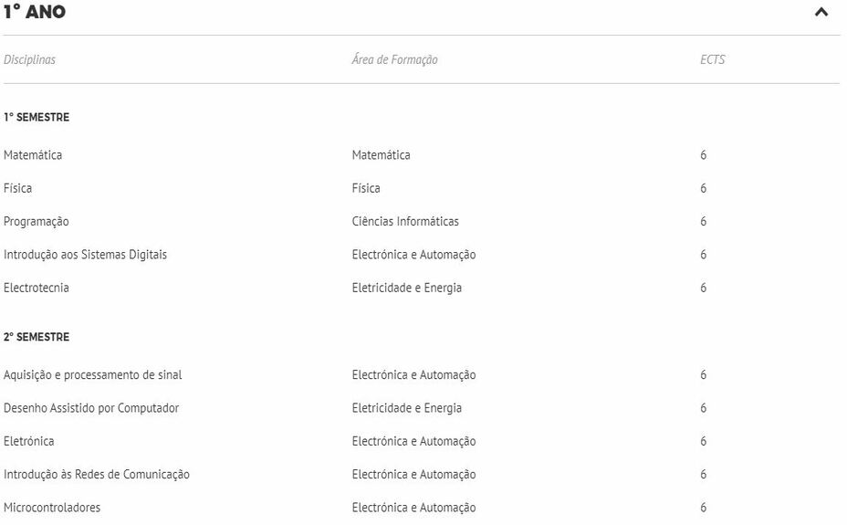
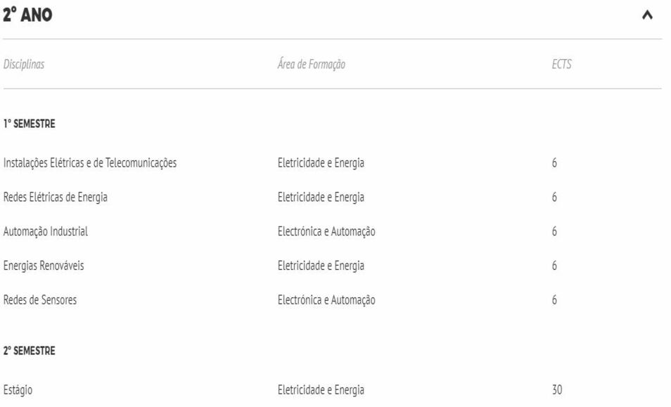
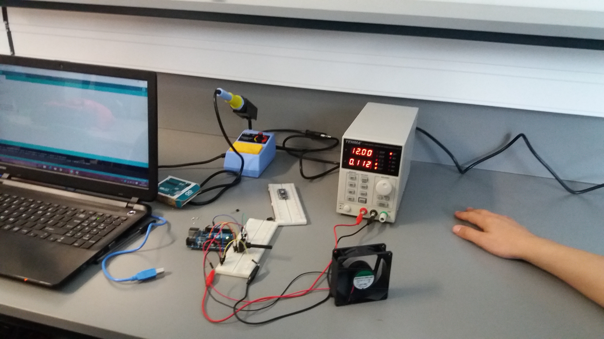
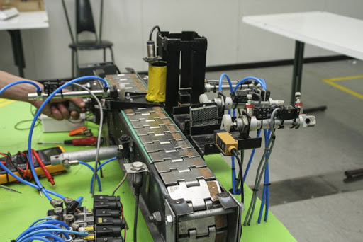

CTESP em Sistemas Eletrónicos e Instalações Elétricas
O Curso Técnico Superior Profissional em Sistemas Eletrónicos e Instalações Elétricas é uma formação de ensino superior que compreende 4 semestres (2 anos letivos), conferindo o diploma de técnico superior profissional de nível 5 do Quadro Nacional de Qualificações nas áreas de Eletricidade e Energia, Eletrónica e Automação, a quem nele obtiver 120 ECTS.
Este curso visa proporcionar uma sólida formação na área de Eletrónica e Automação, fornecendo também bases na área da Eletricidade e Energia.
Durante o curso é fortemente incentivado e estimulado o trabalho prático, realizando pequenos projetos laboratoriais de forma a aprender os conceitos necessários ao mesmo tempo que se prepara o aluno para o trabalho em equipa e o futuro estágio em ambiente empresarial.
Os técnicos superiores deste curso terão capacidades para:
- Projetar, especificar, programar e produzir sistemas e equipamentos eletrónicos;
- Elaborar esquemas de instalações elétricas e de circuitos e equipamentos eletrónicos;
- Projetar e planear a instalação, manutenção e reparação de instalações elétricas de baixa e média tensão, de energias renováveis, de comando, sinalização e proteção, de distribuição de energia elétrica e instalações de telecomunicações em edifícios.
- Efetuar manutenções preventivas e corretivas de equipamentos e sistemas de telecomunicações em edifícios, utilizando tecnologias, técnicas e instrumentos adequados, a fim de assegurar o seu correto funcionamento, respeitando as normas de segurança de pessoas e equipamentos.
- Instalar e configurar uma rede de sensores.
- Programar algoritmos simples em microcontroladores para leitura e comunicação de dados.
- Efetuar orçamentos relativos à execução, manutenção e/ou reparação de instalações elétricas, efetuando, nomeadamente, os cálculos de materiais, equipamentos, mão de obra e tempos de trabalho.
- Prestar assistência técnica a clientes esclarecendo possíveis dúvidas sobre o funcionamento de equipamentos elétricos/eletrónicos e instalações elétricas intervencionadas.
- Preencher documentação técnica e elaborar relatórios técnicos relativos à atividade desenvolvida.
SAÍDAS PROFISSIONAIS
O técnico superior profissional deste curso poderá trabalhar em qualquer empresa de Eletrónica e Automação, estando habilitado a projetar e/ou reparar circuitos e equipamentos eletrónicos. Terá também habilitações para instalar ou reparar instalações elétricas de baixa e média tensão, bem como trabalhar com equipamentos de energias renováveis.
Terá também habilitações para reconfigurar redes simples de sensores bem como programar dispositivos microcontroladores ou autómatos.
O técnico superior deste curso poderá também optar por ingressar numa licenciatura na área da Eletrónica, onde certamente ficará dispensado de frequentar algumas unidades curriculares que sejam comuns a ambos os cursos.
DESTINATÁRIOS
Este curso é especialmente dirigido a quem ambiciona desenvolver as suas competências na área da Eletricidade e Eletrónica, como por exemplo, Instalações Elétricas e de Telecomunicações, bem como aprender novos conceitos relacionados com a área, nomeadamente aprender a programar pequenos microcontroladores, instalar uma rede de sensores, aprender a programar autómatos industriais ou perceber como funciona uma rede de comunicações.
Podem candidatar-se a este curso: alunos com o Ensino Secundário completo (qualquer que seja a via, com ou sem exames nacionais); alunos do regime “Maiores de 23 Anos de Idade”; alunos com diploma de um CET (Curso de Especialização Tecnológica); alunos com diplomas de Ensino Superior (reconversão profissional).




